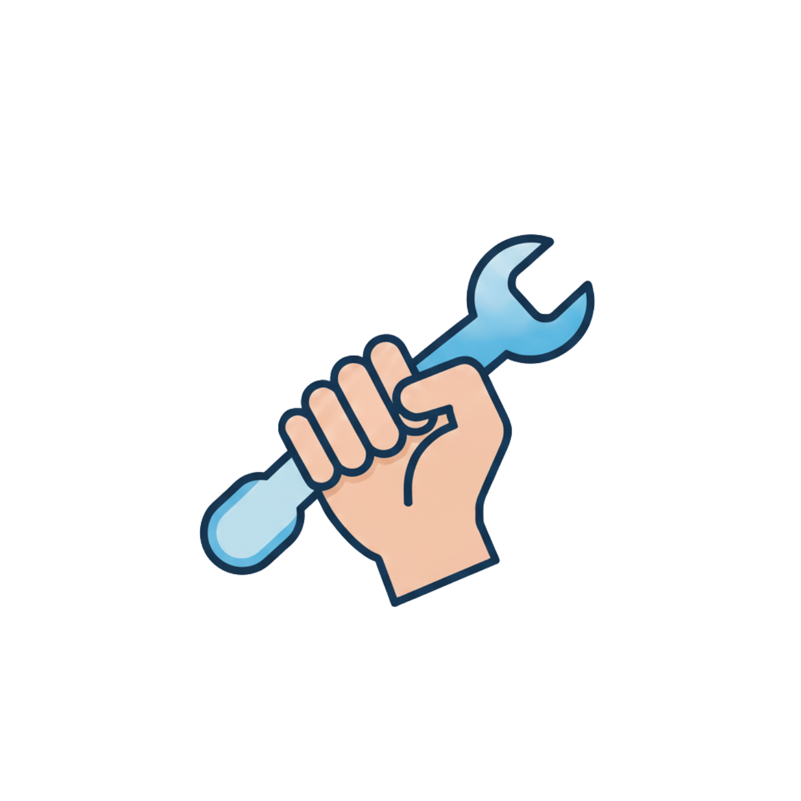
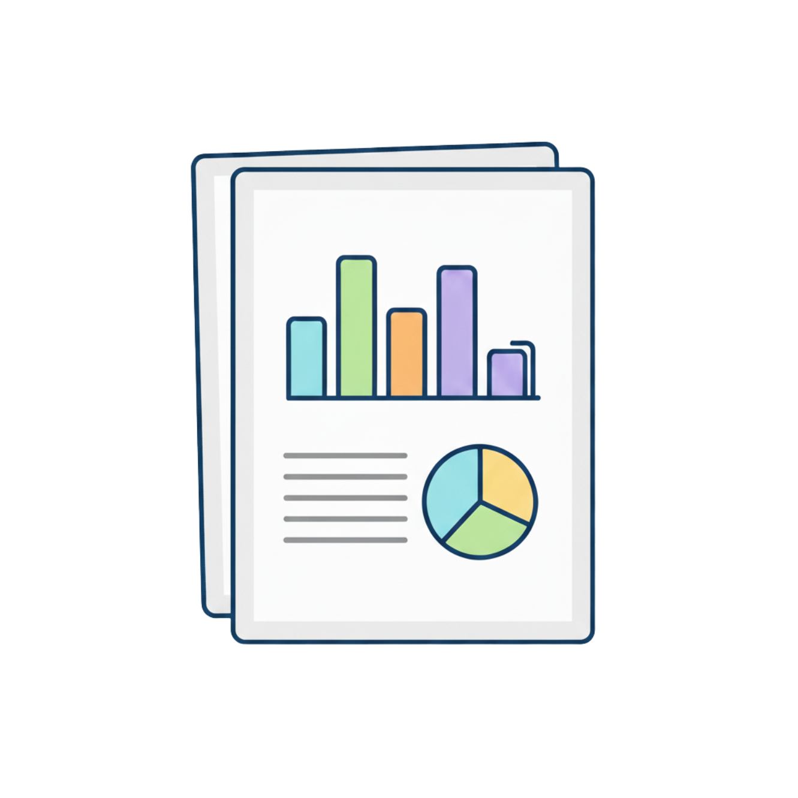
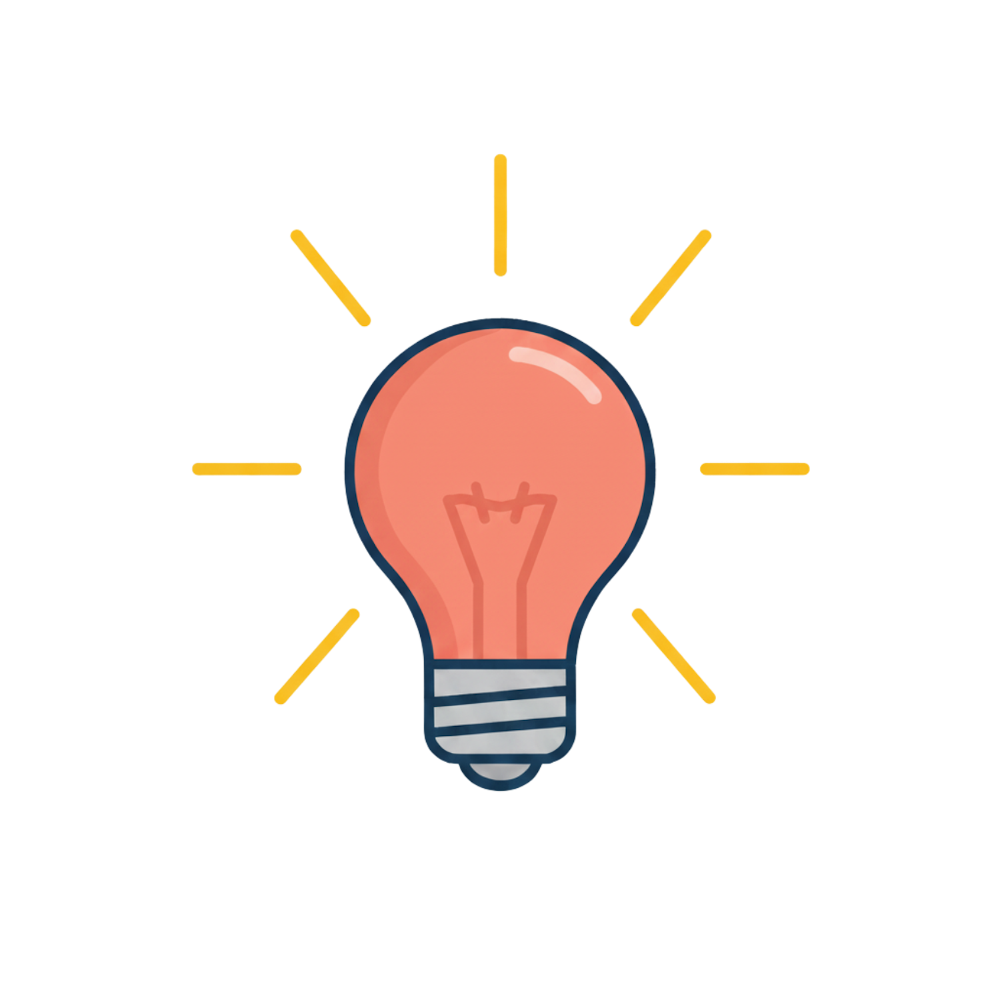

Every successful strategy is built on a foundation of robust evidence. We provide the deep analytical work needed to explore problems, test solutions, and build an unshakeable evidence base for your proposals. From sophisticated cost forecasting to developing new policy frameworks, we deliver the insights you need to make informed decisions.

A technically perfect economic case can still fail if it doesn't tell a clear and compelling story. I specialise in crafting evidence-based narratives that win over stakeholders, from public officials and politicians to the public. I bridge the gap between technical analysis and strategic communication, ensuring your project is understood and supported.

Email: info@pineconomics.com
LinkedIn: Omer (Rafael) Bor